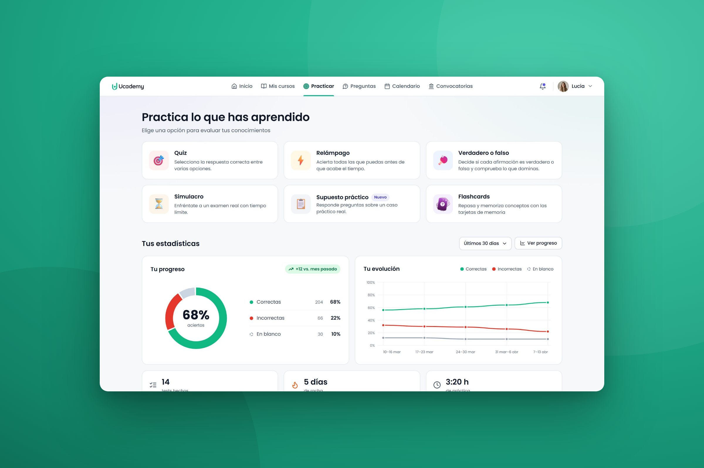

Ucademy
Practice, from hidden feature to sales argument
- Timeline
- Q4 2024
- Role
- Product Designer
- Platform
- Web and app
- Goal
- Sales and engagement
The challenge
Practice had little weight in the design of Ucademy: it was hidden and the experience wasn’t good, so few students used it. We wanted current students to practise more and know how they were doing on each topic, and to add practice modes for specific courses to reach a new audience.
What I did
I found why students didn’t practise in the usage metrics and error reports. Then I turned Practice into six ways to practise, with progress per topic and an explanation for every answer, and set the scope with the developer and the CTO.
The outcome
Practice became a sales argument: sales doubled in the quarter after the launch. 50%+ of students tried the new modes and came back, and they created 20% more tests.
Decisions
-
01 · Practice modesSales argument
Give every student a way to practise
Need
Three old formats, always the same kind of question. Practice felt dated next to competitors.
Decision
Six modes, each for a different intention. Some match the official exams of each academy; others, like true or false, make practice fun and varied.
Result
50%+ of students tried the new modes and came back to them.
-
02 · ProgressRetention
Show students where to reinforce
Need
Students had no information about their progress or the topics they needed to reinforce.
Decision
Their progress and its evolution over time, and their weakest topics, from their results and self-assessment, one click away from practice.
Result
Students practised the topics we recommended.
-
03 · Recent testsWeekly engagement
Invite students to try again
Need
Nothing invited students to try a test again.
Decision
Their last tests with the result and a Repeat button, and results that offer to practise the mistakes.
Result
Students repeated a test when it went badly.
-
04 · Test setupWeekly engagement
Make creating a test easy
Need
Creating a test was one page of dropdowns. Students scrolled a lot to find their course, and if it had no tests, the page just showed up empty and looked like an error.
Decision
A setup in three short steps, with clear guidance at each one. Small tags show how many questions each topic has and its status, and a topic without tests is locked, with a short message that says so.
Result
Fewer queries to Customer Care and fewer error reports.
-
05 · ExplanationsRetention
Help students learn from every mistake
Need
Wrong answers came with no explanation, so students didn’t learn from their mistakes.
Decision
We added AI to the test creation flow I designed for teachers: they generate an explanation for every answer, so students get fuller explanations without more work for teachers.
Result
Fewer students reported an answer as wrong just to ask why it was right.
Impact
Sales used Practice as a key argument, and oposiciones students used the case-based exams a lot. Fewer students wrote to Customer Care or reported errors.
sales in the quarter after the launch
of students tried the new modes and came back
more tests created by students
ways to practise, up from three types of test
Learnings
Launch to sell, prioritise what students use
Flashcards were a sales argument and could bring new students in, so launching them was the right call for the business. But students used them little, so improving them was never a priority. When usage shows a feature isn’t used much, I put the effort into the features students do use.
Keep the signal when you remove a dead end
Locking topics without tests ended the false errors, but we lost track of which topics students wanted. Next time I’d let students ask for tests on a topic.